0x00 导航
鉴于 AI 绘画的知识点较多，限于篇幅及便于分类组织，我会以一个系列文章的形式记录：
- 系列 01：《AI 绘画原理与工具》
- 系列 02：《AI 绘画模型扫盲》
- 系列 03：《AI 绘画模型推荐》
- 系列 04：《文生图：不会念咒的炼丹师不是一个好画家》
- 系列 05：《图生图：突破次元圈限制》
- 系列 06：《高清修复：轻松拥有 24K 钛合金画质》
- 系列 07：《提示词进阶：渐变|交替|混合》
- 系列 08：《LoRA 专题：五大应用场景》
- 系列 09：《LoRA 训练：不会炼丹的魔法师不是一个好画家》
- 系列 10：《ControlNet: 姿态控制》
- 系列 11：《ControlNet 进阶：打造炫酷的艺术字和二维码》
- 系列 12：《AI 动画初探：整个宇宙为你而闪烁》
你当前正在阅读的是系列 02《AI 绘画模型扫盲》
0x10 模型原理
刚接触 AI 绘画的你，是不是经常有碰到过这样的情况呢：
在各大展示 AI 作品的网站上，看到别人画出来的图一张比一张好看，于是你把提示词抄回来信心满满的一试，哦噢 ~
画出来的完完全全就是两个物种 ？！！
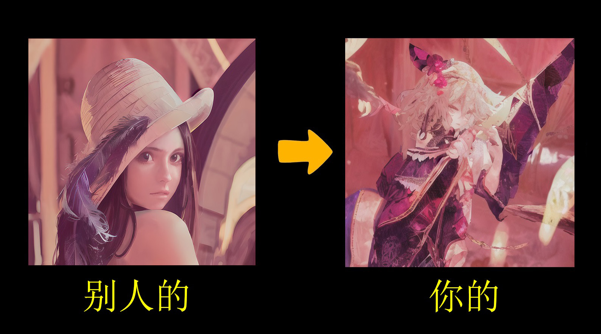
这种货不对版的问题，不是提示词的问题、也不是 AI 出毛病了，很大概率是出在你的模型和原作者使用的不一样。
AI 之所以能满足我们的各种奇奇怪怪的需求，其实来源于它之前对很多其他画作的深度学习。
业界常常把拿图片给 AI 看的行为叫做 “喂图”。
而学习的内容不光包括对具体事物的形象描绘，还包括这些事物的呈现方式，通俗一点说就是 “画风”。
如果我们喂给 AI 的图片都是二次元风格的，那 AI 的世界就是二次元的。这时不论我们让它画人还是风景，它都会画的像一副二次元插画。
但我们喂给 AI 的图片都是真实事件照片，那他就绝对画不出二次元的画作来，因为他根本没见过二次元是什么样子的。
我们会把喂给 AI 图片、让 AI 学习的这个过程，打包整合到一个文件里，这就是 AI 绘画中的模型了。
使用不同风格的模型、去描绘同一个画面，就能做出不同风格的作品来：
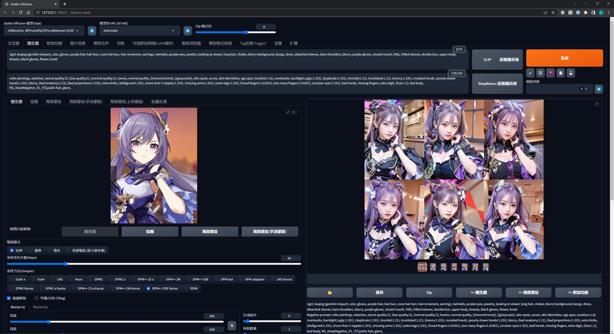
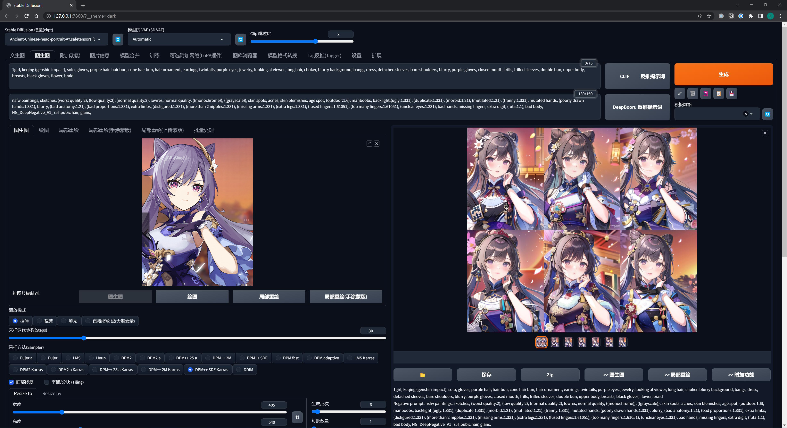
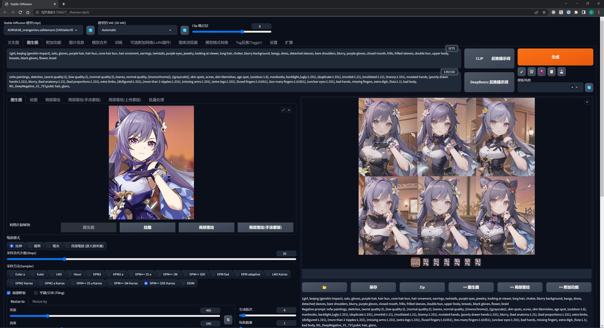
对于一幅 AI 绘画作品而言，提示词 + 模型 + 参数，只有当这三者都被完全确定下来的时候，AI 才能产出你想要的内容 —— 但也仅仅是无限逼近而已，AI 绘画很考究运气，脸不好的人可能 100 连抽也抽不出好卡。
0x20 常用模型科普
在上一节已经说过，模型的位置是固定在 %{NovelAI}/models/ 目录下的。
你如果下载了新的模型，但不知道要放去哪里，可以到《Stable Diffusion 法术解析》查询。
另外 NovelAI 是支持常用的模型下载和管理的，通过 NovelAI 下载的模型会自动存储到对应的目录，无需过多操心：
0x21 Checkpoint/大模型/底模型/主模型
默认存储位置：
${NovelAI}/models/Stable-diffusion（后缀为.ckpt或.safetensors）
常玩游戏的朋友可能比较好理解 Checkpoint 是什么，其实就好比我们在游戏里每隔一段时间需要存档一样。
一个大的模型训练起来是很消耗算力的，他们运算到某个关键位置的时候，就会建立一个关键点保存已经运算的部分，以后方便回滚和继续计算，这就是 Checkpoint 的来源。
这个保存出来的检查点就可以用来支持我们的 AI 阅片和出图。得益于这种检查点特性，大部分模型都拥有不断往下迭代更新的能力。
但是 checkpoint 本身很大，通常情况下大小在 3-7GB 之间、文件名后缀是 .ckpt，我们也常把这种几 GB 级别的模型叫做大模型，也称作主模型 或 底模型。
还有一种格式的大模型后缀是 .safetensors，占用空间会比较小一点，通常大小在 1-2GB 左右。
两者区别在于 .safetensors 对模型的训练、权重等参数做了压缩和加密处理，但是使用起来并无任何区别（起码现阶段没区别）。
如果下载模型时，发现作者提供了两种模型，选择困难症的你无脑下载 .safetensors 好了。
主模型在 SD WebUI 的左上角可以进行切换：
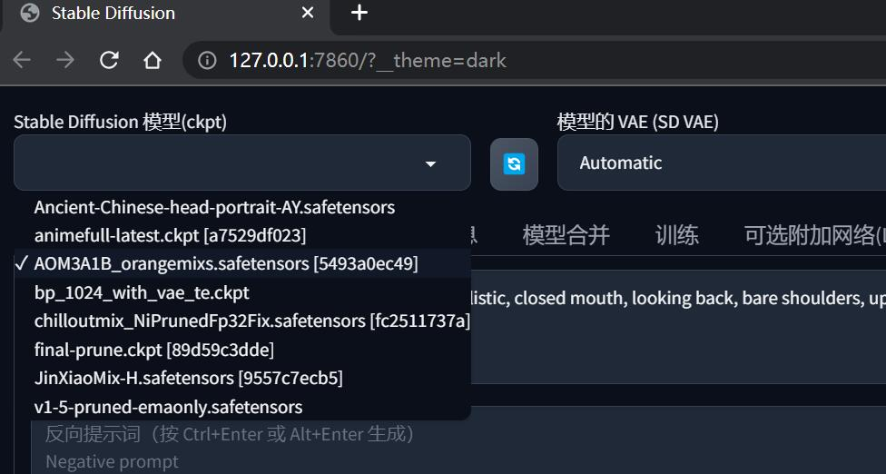
注意不要放太多大模型进去，否则程序启动会越来越慢甚至无法启动，用到哪些放哪些，其他大模型的建议新建一个备用目录暂存起来
0x22 VAE/变分自解码器
默认存储位置：
${NovelAI}/models/VAE（后缀为.pt、.ckpt或.safetensors）
在 SD WebUI 选择主模型的时候，不难发现旁边还有一个 VAE 模型的选择。
通俗易懂地理解 变分自编码器
VAE 的全称为 Variational Autoencoder（变分自解码器），是一种在机器学习和深度学习中常用的模型，它可以用来生成新的数据，比如新的图片或者新的音乐等。
要理解VAE，我们首先需要理解两个概念：自编码器 和 变分推断。
- 自编码器（Autoencoder）：自编码器是一种神经网络，它的任务是学习如何将输入的数据（比如图片）编码成一种更简单的形式（称之为 “编码”），然后再从这个编码中恢复出原来的数据（称之为 “解码”）。你可以把这个过程想象成压缩和解压缩文件的过程。我们先把一个大的文件压缩成一个小的文件，然后再从这个小的文件中恢复出原来的大文件。
- 变分推断（Variational Inference）：变分推断是一种统计方法，它的任务是估计一些我们不能直接计算的量。在 VAE 中，我们使用变分推断来估计编码的分布，也就是说，我们想要知道所有可能的编码都有哪些，以及他们各自的可能性有多大。
那么，VAE 是怎么工作的呢？
VAE 的工作过程可以分为两步：编码和解码。
- 在编码步骤中，VAE 会接收一个输入（比如一个图片），然后把它转化成一个编码（潜变量）。这个编码不是一个固定的值，而是一个分布，也就是说，它表示了所有可能的编码及其可能性（即数据的内在结构或者特性）。
- 在解码步骤中，VAE 会从编码的分布中随机选择一个编码，然后根据这个编码生成一个新的数据（在这个过程中，潜变量起到了一个桥梁的作用，它们连接了输入数据和输出数据）。
通过这个过程，VAE 可以生成和输入数据类似，但又有所不同的新数据。你可以把这个过程想象成画画。首先，你看着一个风景，然后在脑海中形成了一个对这个风景的理解（这就是编码）。然后，你根据你的理解画出一个新的风景（这就是解码）。这个新的风景和原来的风景是类似的，但又有你自己的风格和创新。
总的来说，变分自解码器就是一种能生成新数据的模型。它首先把输入数据编码成一个分布，然后从这个分布中随机选择一个编码，最后根据这个编码生成新的数据。
针对 “数据的内在结构或者特性”，再举个形象例子，人的五官肉眼很容易分辨，这就是显式变量，但五官的相对位置我们很难看出来，这就是数据的内在结构、或者说是潜变量。
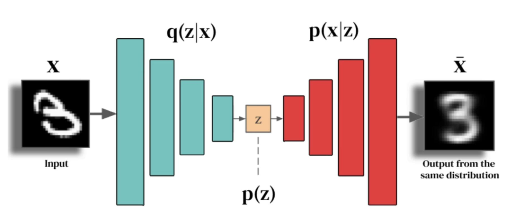
顺带一提，这个生成新数据的过程和第一节中提到 “眼睛一闭一睁” 的 Diffusion（扩散）有一些相似之处，然而它们的工作原理和方法有一些不同。
Diffusion 的工作原理是基于扩散过程，也就是从一种状态向另一种状态平滑过渡的过程。在这个过程中，模型会逐步改变数据，直到它变成一个完全不同的形式。这就像你在一个杯子里加入一滴墨水，墨水会慢慢扩散，直到整个杯子都是墨水的颜色。
Diffusion 的一个关键概念是噪声，也就是随机的、不可预测的变化。在扩散过程中，模型会在每一步添加一些噪声，这就像是在杯子里的水中不断添加新的墨水。通过控制这些噪声，模型可以将数据从一种状态（比如一张图片）扩散到另一种状态（比如一张完全不同的图片）。
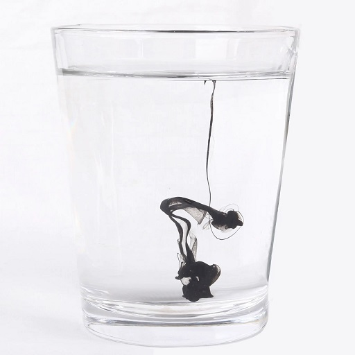
相比之下，VAE 的工作原理是基于编码和解码的过程。VAE 首先将数据编码成一个更简单的形式（比如一个向量），然后再根据这个编码生成新的数据。这就像是你首先理解一个风景，然后根据你的理解画出一个新的风景。
从 VAE 的实用属性上看，你可以粗略的把它理解为 AI 绘画的一种 “调色滤镜”，因为它最直观的影响的东西就是画面的 “色彩质感”。
目前多数比较新的主模型其实都已经把 VAE 整合进去了，但也不排除少数没有的。
这种模型在不加载 VAE 的情况下，出图就会发灰发白。
多数模型作者会考虑到这一点，会推荐他们认为合适的 VAE。
例如这款 FaceBombMix 模型，作者推荐的 VAE 是 kl-f8-anime2.ckpt：
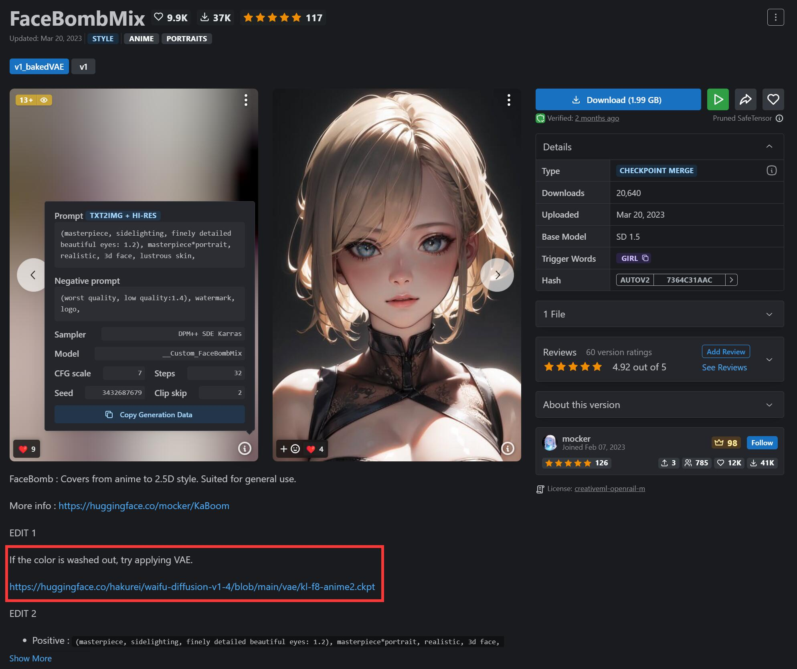
kl-f8-anime2.ckpt 其实默认已经在 NovelAI 整合包里提供的，这种 VAE 是普遍适用于大多数模型的。
但是也有一些 VAE 是某些特定主模型专属的，你可以对这种 VAE 重命名、以便切换主模型后可以自动识别并加载，规则是：
- 必须放在
${NovelAI}/models/VAE目录下 - 文件名修改为和主模型一样的名称（不算后缀）
在 VAE 的 文件名 和 后缀之间，加入.vae
例如：
- 主模型: AOM3A1B_orangemixs.safetensors
- VAE 模型: AOM3A1B_orangemixs.pt
AOM3A1B_orangemixs.vae.pt
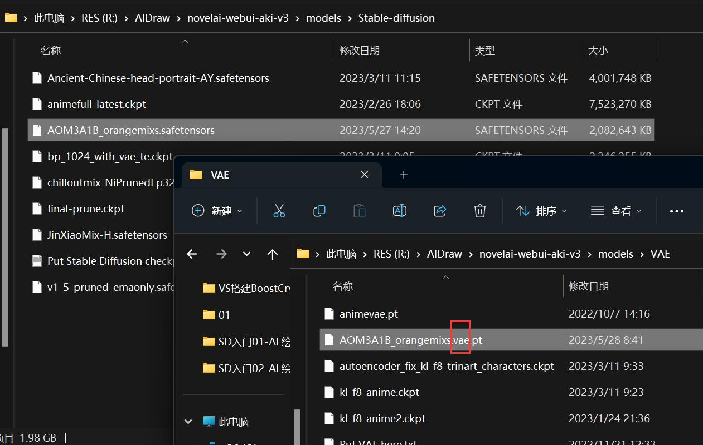
以这种规则命名之后，当在 SD WebUI 把主模型切换到 AOM3A1B_orangemixs 时， VAE 就不需要手动选择了，保持【自动】选项即可。
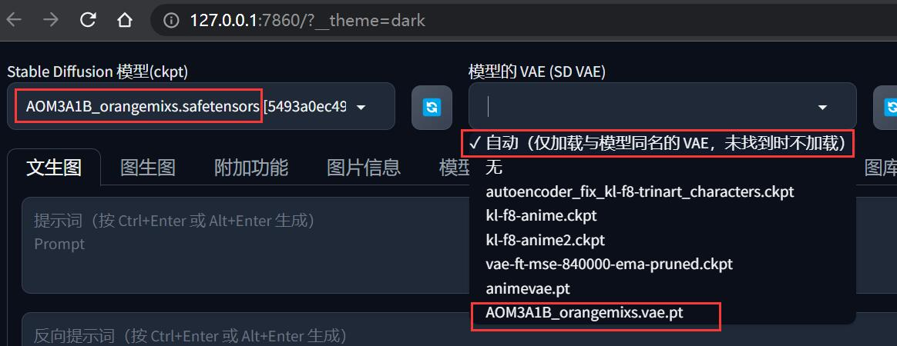
0x23 LoRA/低秩适应模型
默认存储位置：
${NovelAI}/models/LoRA（如果没有可以手动创建）
注意，如果你安装了【可选附加网络（LoRA 插件）】，它的存储位置是在 ${NovelAI}/extensions/sd-webui-additional-networks/models/lora，为了方便管理，建议在 SD WebUI 中将其设置到 ${NovelAI}/models/Lora：
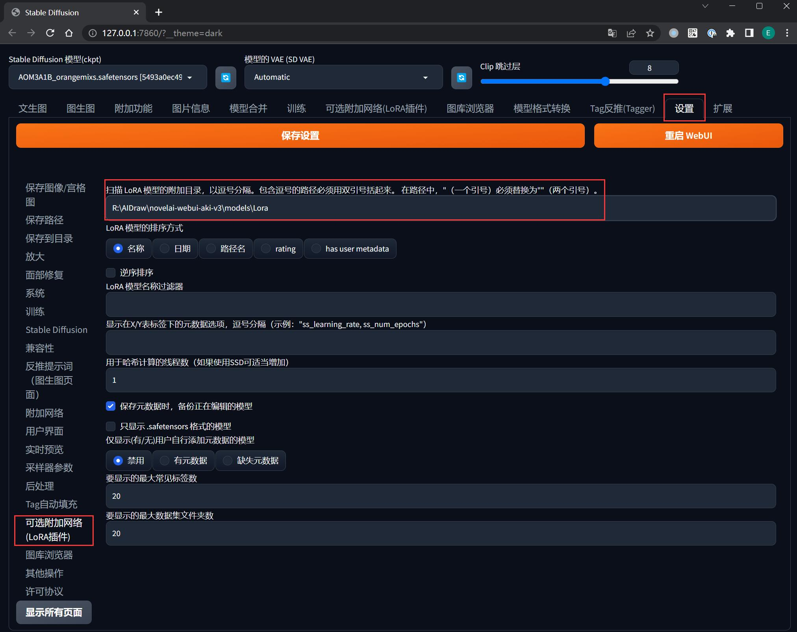
通俗易懂地理解 低秩适应
LoRA 的全称为 Low-Rank Adaptation（低秩适应），是一种在机器学习中使用的方法，用于解决一些特殊问题，尤其是在数据中存在不均匀性的情况下表现较好。
要理解 LoRA，我们首先需要理解两个概念：低秩和适应。
- 低秩（Low Rank）：在数学中，秩（Rank）是一个描述矩阵信息量的概念。低秩意味着这个矩阵包含的信息比较少。在机器学习中，我们常常使用低秩的方法来简化问题，因为包含的信息少，计算就更快，更容易处理。
- 适应（Adaptation）：适应是指模型可以根据新的数据自我调整，使得模型在新的数据上表现得更好。这对于处理那些数据分布可能会变化的问题非常有用。
那么，LoRA 是怎么工作的呢？
LoRA 的思想是，对于复杂的问题，我们可以找到一个简单的（低秩的）模型作为基础，然后根据我们手头的数据对这个模型进行微调（适应）。这样，我们就可以用一个简单的模型来解决复杂的问题，同时还能保证在新的数据上表现得很好。
我们可以把这个过程比喻成学习骑自行车。起初，你可能会先学习一个简单的模型，比如如何平衡，如何踩踏板等。然后，当你在不同的路面（比如沙地、石头路、上坡、下坡等）上骑车时，你需要对你的骑车方式进行调整，这就像是对原始模型的适应。所以，虽然你开始时学的是一个简单的骑车模型，但是通过适应，你可以在各种各样的路面上骑车。这就是 LoRA 的思想。
LoRA 的实用意义在于 固定特定人物角色特征， 是目前非常常用而且重要的模型，而且一般的 LoRA 模型都需要若干个 “触发词” 才能发挥其效果。
篇幅较大先不展开，在本系列的《图生图：突破次元圈限制》将会看到 LoRA 的初步应用，在《LoRA 专题：五大应用场景》可以学习到完整的实用技巧。
0x24 Hypernetworks/超网络
默认存储位置：
${NovelAI}/models/hypernetworks（如果没有可以手动创建）
通俗易懂地理解 超网络
超网络（Hypernetworks）是一个在深度学习中使用的概念，它提供了一种新的方式来设计和训练神经网络。
你可能已经知道什么是神经网络。神经网络是由很多小的单元（称之为 “神经元”）连接在一起的大型网络。每个神经元都会接收一些输入，然后根据这些输入计算出一个输出。这些神经元的连接方式和每个神经元如何计算输出，都是通过学习数据来决定的。
那么，超网络又是什么呢？
超网络是一个 “大脑中的大脑”，或者说是一个 “网络中的网络”。在一个超网络中，有一个主网络，还有一个或者多个辅助网络（称之为“超网络”）。这些超网络的任务是产生主网络的权重（即神经元之间连接的强度）。
你可以把这个过程想象成一场足球比赛。在这场比赛中，主网络就像是球员，它们在场上跑动，传球，射门。而超网络就像是教练，他们决定球员的阵型，也就是球员之间的连接方式。超网络通过学习数据，不断调整阵型，以达到最好的比赛结果。
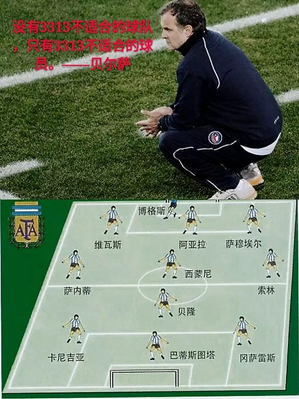
那么，为什么我们要使用超网络呢？
使用超网络的一个主要原因是，它提供了一种灵活的方式来训练神经网络。通过改变超网络，我们可以在不同的任务中使用不同的网络结构。这就像是，教练可以根据对手的不同，调整球队的阵型。这种灵活性使得超网络在处理复杂问题时更具优势。
总的来说，超网络就是一种神经网络设计和训练的新方法，它使用一个或多个辅助网络（超网络）来生成主网络的权重，从而提供了一种更灵活的方式来处理各种不同的任务。
Hypernetworks 的实用意义在于 画面微调， 篇幅较大先不展开，在本系列的后面会以专题的形式叙述。
0x25 Embeddings/嵌入式向量
默认存储位置：
${NovelAI}/models/embeddings（如果没有可以手动创建）
通俗易懂地理解 嵌入式向量
嵌入式向量（Embeddings）是一种在机器学习和深度学习中常用的概念，它是一种将复杂的事物（如单词、图像、用户、产品等）转化为可以被计算机理解的形式的方法。
想象一下，如果你要向一个外星人解释 “猫” 是什么，你可能会说它是一种小型的、有毛的、有四条腿的动物，喜欢喵喵叫。但对于计算机来说，它并不能像人类那样理解这些词语。我们需要一种方法，能把 “猫” 转化为计算机可以理解的形式。这就是嵌入式向量的作用。
嵌入式向量其实就是一个数学上的向量，包含了很多数字。每个数字都代表了一种特性。比如，在描述 “猫” 的嵌入式向量中，可能有一个数字代表它的大小，另一个数字代表它的毛色，还有一个数字代表它的叫声等等。这些数字是通过机器学习模型从大量的数据中学习得到的。
嵌入式向量的一个重要特性是，相似的事物会有相似的嵌入式向量。比如，“猫” 和 “狗” 在很多方面都很相似（都是小型的、有毛的、有四条腿的动物），所以他们的嵌入式向量也会很接近。这使得我们可以用嵌入式向量来寻找相似的事物，或者理解事物之间的关系。
总的来说，嵌入式向量是一种将复杂的事物转化为计算机可以理解的形式的方法。通过嵌入式向量，我们可以更好地理解和处理各种复杂的问题，如自然语言处理、推荐系统、图像识别等。
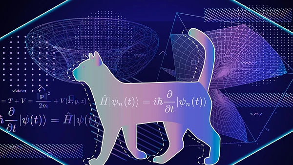
Embeddings 的实用意义在于 优化画风， 但是自从 LoRA 出现以后，画风这块也被 LoRA 毫不逊色地承包了，Embeddings 基本就坐了冷板凳。后面如果有机会再出个专题介绍 Embeddings。
0x30 模型下载渠道
说了那么多，那么这些模型都可以在哪里找到呢？
因为 SD 官方模型所生成的图像风格比较单一、缺乏细节、略显粗糙，因此市面上绝大多数玩家用来作图的模型其实都是由第三方训练并发布的模型，俗称 “私炉模型”，相对应的 SD 则称为 “官炉模型” 。
“私炉模型” 叫法的起源
在 AI 绘画这个领域，有很多有意思的比喻。
譬如大家会把训练 AI 学习图片、生成模型这件事情，称为 “炼丹”。
如果你在后期完整体会过一次训练模型的过程，就能体会到这个称呼的精髓了。
如果没有训练过模型，你也可以想象一下修仙小说中仙人炼丹的场景，要成为一个炼丹师、炼出一颗上品丹药，你得拥有一口好的炼丹炉。
我们将在系列的《LoRA 专题》中接触到炼丹的技巧。
顺带一提，大家也会把输入提示词作画的过程，称之为 “念咒”，提示词本身也被称为 “咒语”。
我相信在系列的《文生图》中，你会对念咒有深刻体会。
由于版权问题，官炉在选择学习素材的来源和尺度上都有很多限制，所以利用私炉作画出图是目前的主流趋势，因而我们主要下载的也都是私炉模型为主。
目前江湖上主流的下载渠道主要有：
- huggingface: 俗称 “抱脸”，无需科学上网。深度学习和人工智能的专业网站，但找起来不是很直观。
- Civitai: 俗称 “C 站”，需要科学上网，全世界最受欢迎的 AI 绘画模型分享网站，可以不注册使用（注册之后你会感受到世界的参差）。
- 哩布哩布 AI: 国内新兴的 AI 模型分享社区，对标 C 站的感觉，好处是无需科学上网
0x31 huggingface
huggingface 是一个允许用户共享 AI 学习模型和数据集的平台。
它覆盖的内容非常广，不仅仅包括 AI 绘画、还包括很多其他 AI 领域的东西，也专业门槛看上去会比较高。
如果你听说了市面上一些比较知名的模型，但是苦于找不到地方下载，都可以来抱脸搜一下看看。
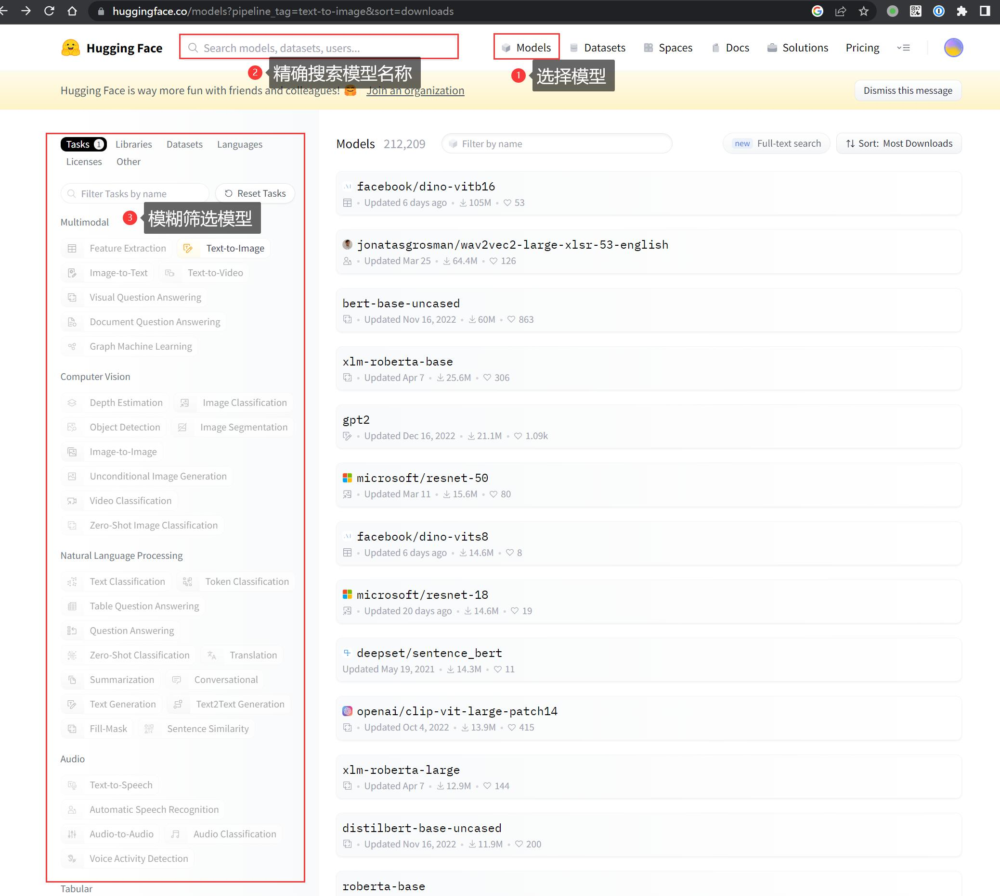
进去首页之后点击顶部的 Models 进入模型页面：
- 可以通过搜索框精确搜索你要找的模型
- 也可以通过标签筛选当下热门的模型
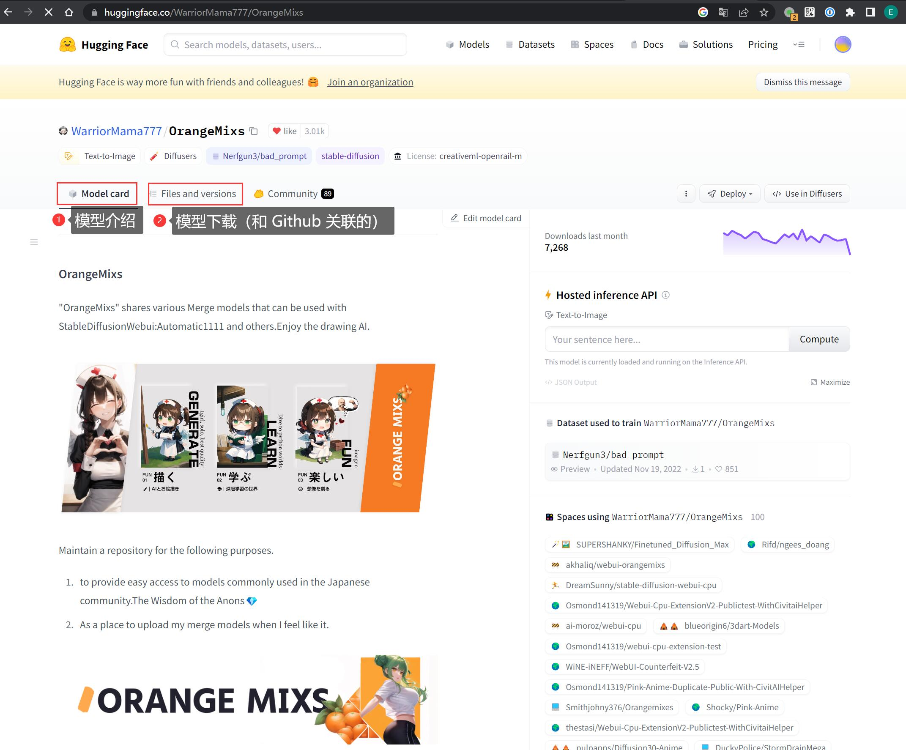
找到合适的模型之后，点开它。这里以著名的二次元模型 深渊橘 为例：
Model card 选项卡是关于模型的介绍，这里一定要看，因为作者会把使用这个模型的注意事项写在这里，例如要用那个 VAE、建议怎么调参等等，如果是 LoRA 模型还会把特定的触发词写在这里。如果你忽略掉了，可能就发挥不出这个模型的真实水平。
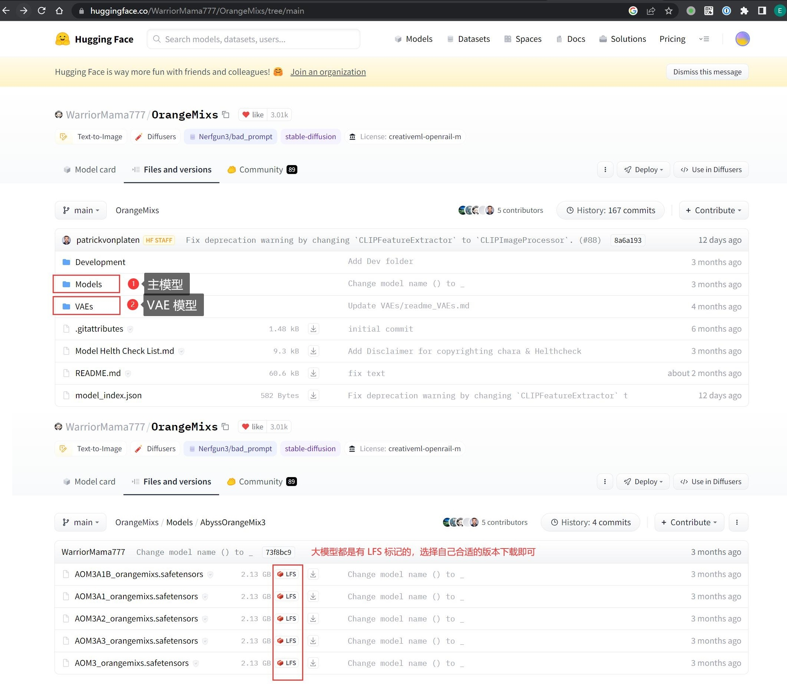
Files and versions 选项卡是下载模型用的，一般作者会提供所有的历史版本，并且把各种模型分类存放，找到自己需要的下载就可以了，不需要全部下载。
部分模型会把源码和本体一起发布，需要关注文件后缀，例如 .pt、.ckpt、 .safetensors 等都是常见的模型后缀。
这里其实是和 Github 打通的，它利用的就是 LFS 大文件存储技术
0x32 Civitai
Civitai 是一个彻头彻尾的 AI 绘画模型分享平台，所以你在里面看到的各种模型的展示是非常具象化的。
重申一下，C 站是可以不注册使用，在工作环境中也建议不要登录使用
顶排的标签是模型的分类标签，有角色设计、魔幻、卡通、机甲等，比较好理解。
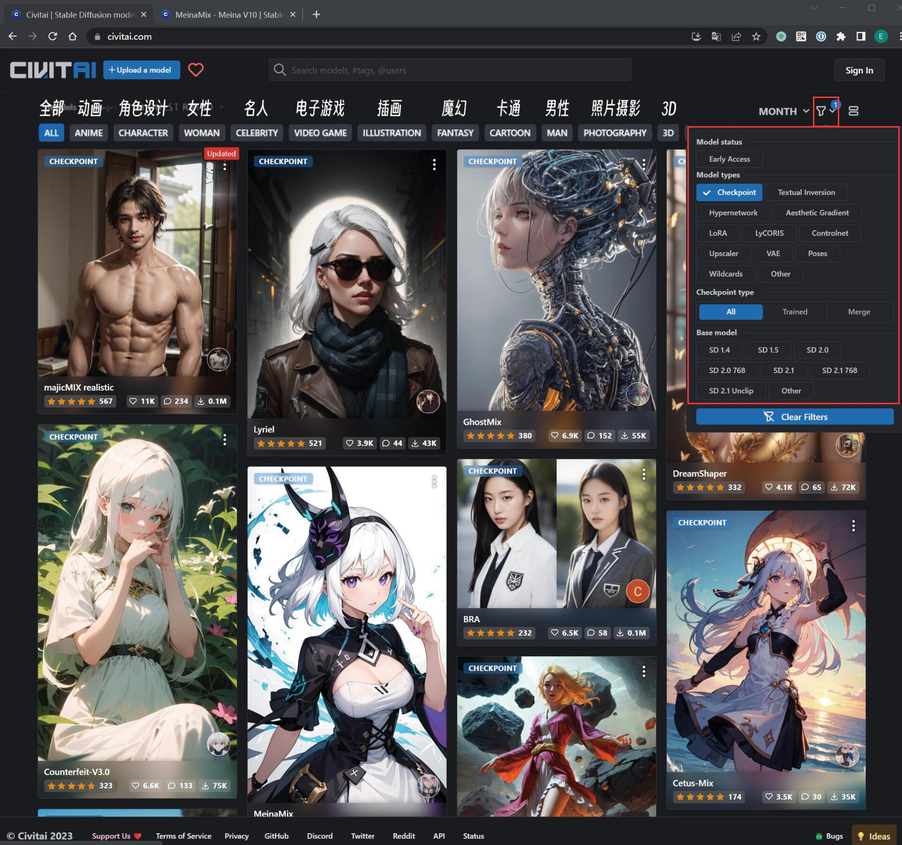
在右上角的小漏斗是筛选模型用的，简单介绍一下：
- Model status（模型状态）
- Early Access（抢先体验）: 还没正式发布的模型，喜欢尝鲜的可以试一下，默认不选就好了
- Model types（模型类型）：前面介绍的模型都可以在这里找到
- Checkpoint type: 当选中 Checkpoint 时才会出现
- All: 建议选这个，Trained 和 Merge 在使用上并无太大区别
- Trained: 由原作者基于图像一点点训练出来的第一手原版模型
- Merge: 融合模型，某些模型创作者为了获得更好的呈现效果、把几个模型融合到一起创造出来的新模型，名字一般含有
Mix
- Base model: 模型训练过程中使用的 “底模”，在训练自己模型时才需要考虑，现阶段不需要选择，维持默认即可
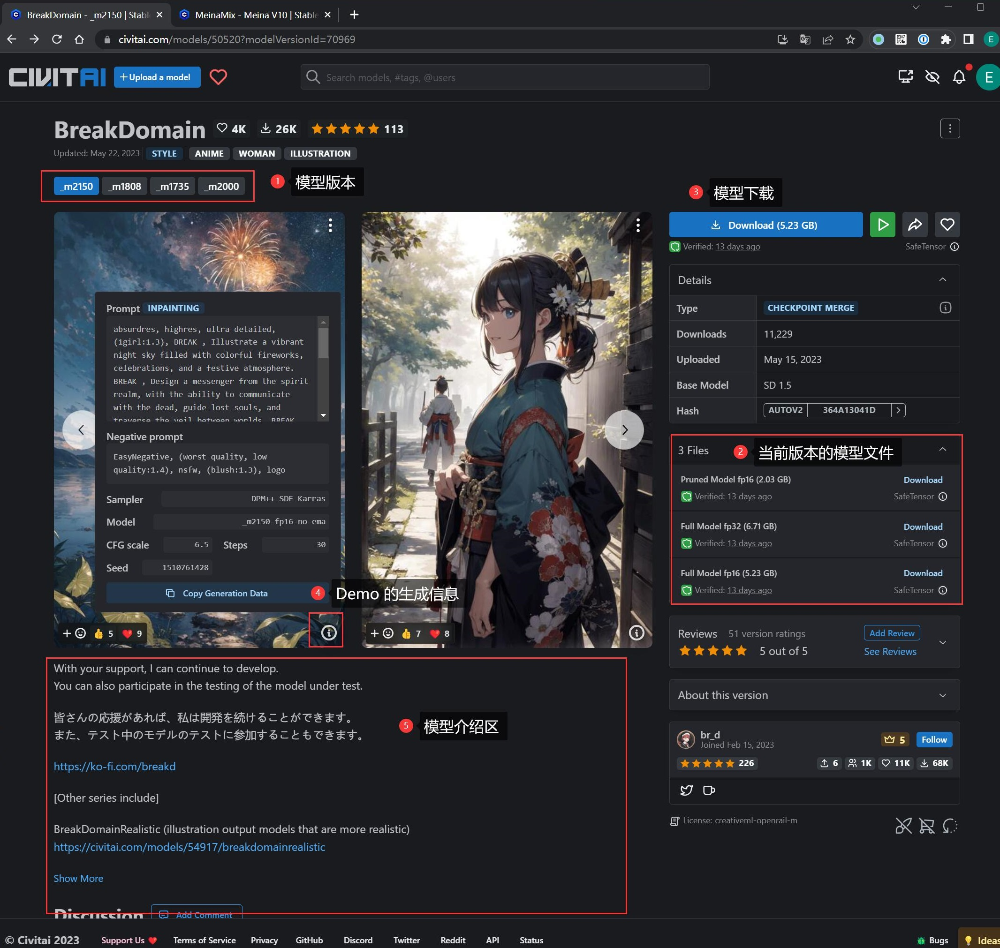
随便打开一个模型：
- 左上角
(1)是模型的版本，建议选最新 - 右边区域是模型的元信息
- 右边中部
(2)是选择该版本中你需要的模型文件 - 左下脚区域
(5)是模型的介绍，作者会在这里指导怎么使用这个模型，例如风格、提示词、分辨率、VAE 等等 - 如果都不想了解，无脑点击右上角
(3)的 Download 直接下载即可
值得一提的是，C 站所有模型都有 Demo 图片的效果展示，点击 Demo 图片右下角的 (i) 按钮，会跳出对应的提示词、采样方法、甚至是随机种子，提供了一条最便捷的方式让你抄作业，可以让你直接产出
最接近模型理想效果的图片。
抄作业有一个技巧：
- 点击
Copy Generation Data按钮，全部内容会复制到粘贴板 - 粘贴到 SD-WebUI 的正向提示词区域
- 点击旁边的
↙按钮，SD-WebUI 就会自动设置好所有出图参数
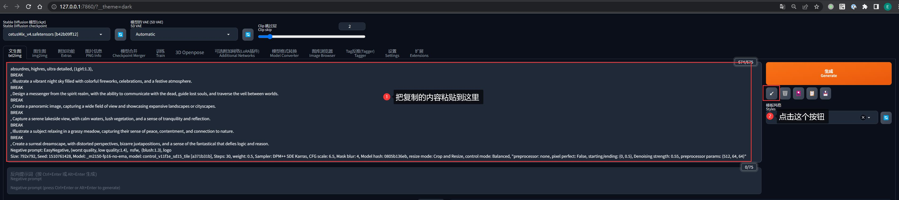
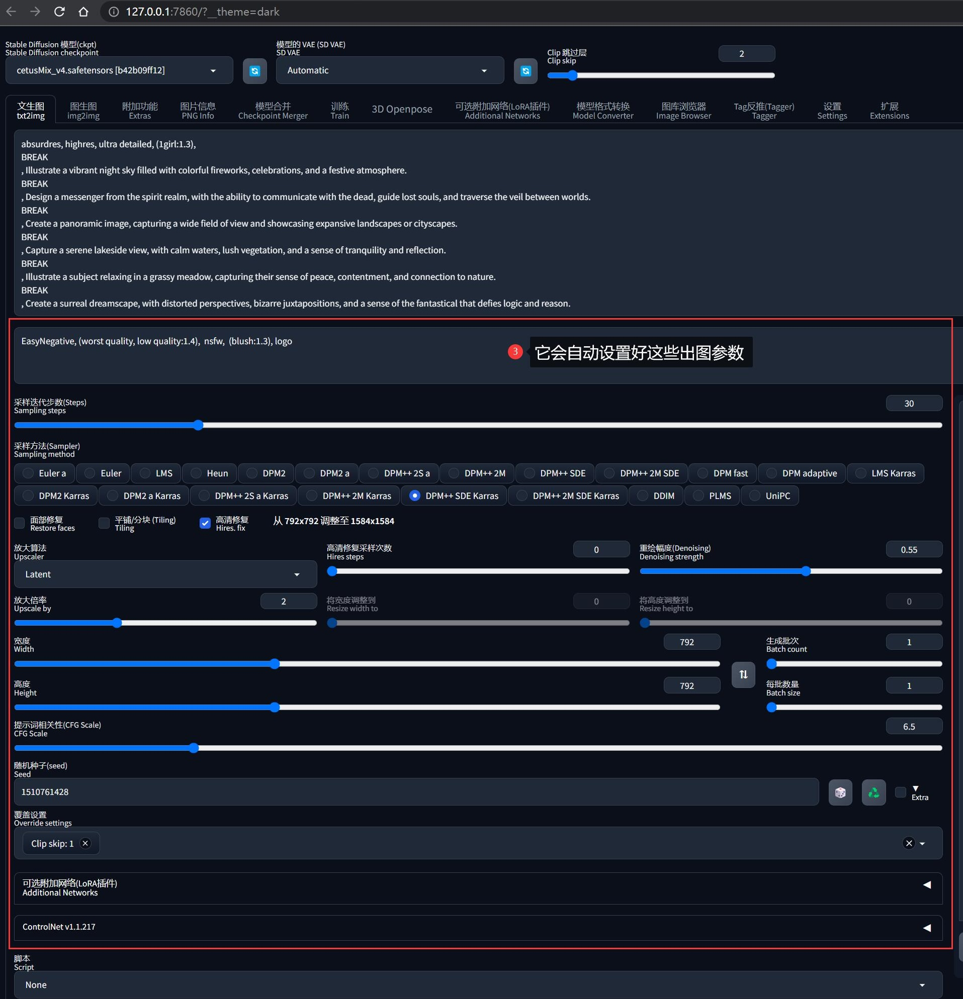
0x33 哩布哩布 AI
哩布哩布 AI 使用上和 C 站 差不多（可以说是对标 C 站所生），而且一些 C 站上的热门模型都有特别标记出来。
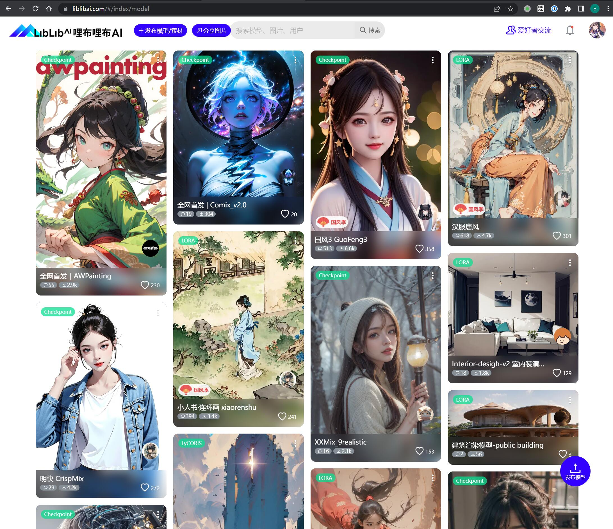
不过受制于监管原因，功能上会打一些折扣。由于是中文网站，这里就不过多赘述如何使用了，参考 C 站即可。